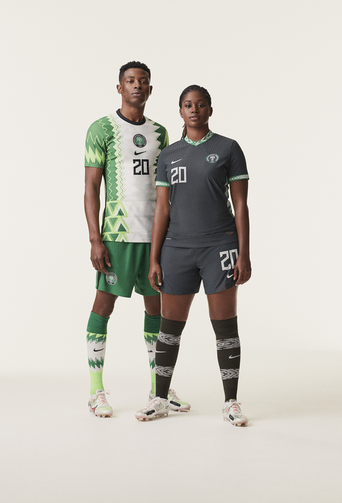
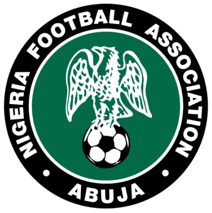

Seleção Nigeriana de Futebol
Conseguiram chegar à Copa do Mundo pela primeira vez na Copa do Mundo de 1994 e desde então apareceram mais cinco vezes. Ainda não passaram das oitavas-de-final. A Nigéria ganhou a Copa das Nações Africanas três vezes, em 1980 e 1994, e 2013. Além disso, também ganharam a medalha de ouro nas Olimpíadas de 1996 (quando venceu o Brasil na semi-final e a Argentina na final) foi medalha de prata nas Olimpíadas de 2008, quando foi derrotado pela Argentina na final, e foi medalha de bronze nas Olimpíadas de 2016, quando foi derrotado pela Alemanha na semi-final e venceu Honduras na disputa pelo bronze. Nos Jogos Pan-Africanos, ganharam a medalha de ouro em 1973, duas de prata em 1978 e 2003 e duas de bronze em 1991 e 1995. No futebol feminino, ganhou duas medalhas de ouro nos Jogos Pan-Africanos em 2003 e 2007, sendo a atual campeã A Nigéria é a maior campeã do Campeonato Mundial de Futebol Sub-17 com 5 títulos: 1985 na China, 1993 no Japão, 2007 na Coreia do Sul, 2013 nos Emirados Árabes Unidos e 2015 no Chile. Ainda venceu a Copa das Nações Afro-Asiáticas e a Copa CEDEAO.
